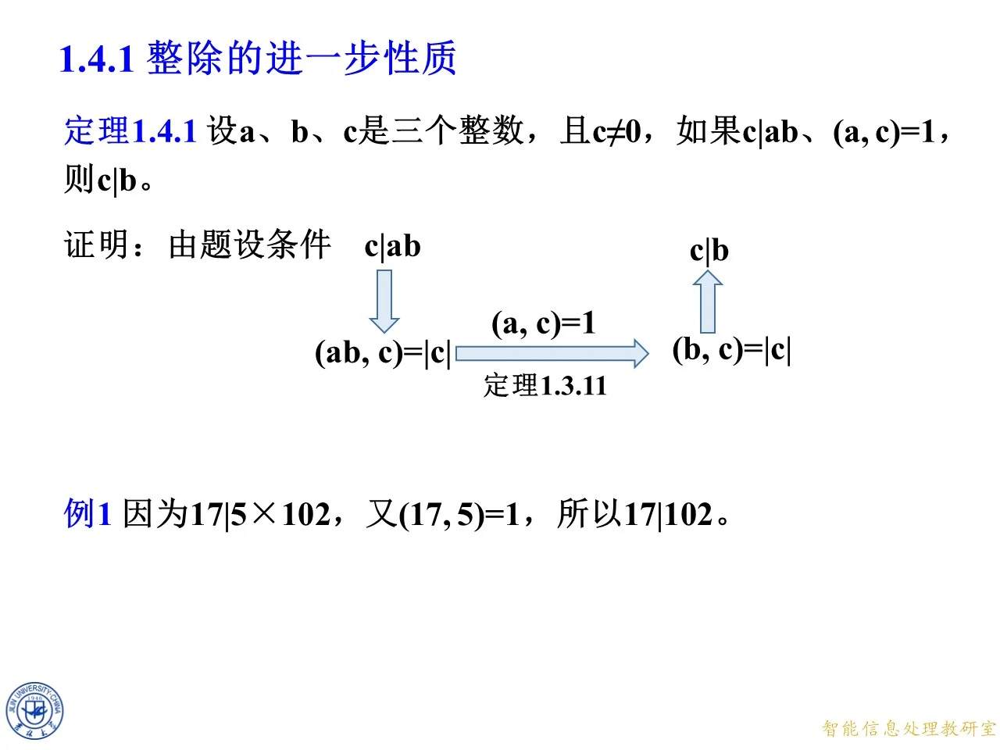
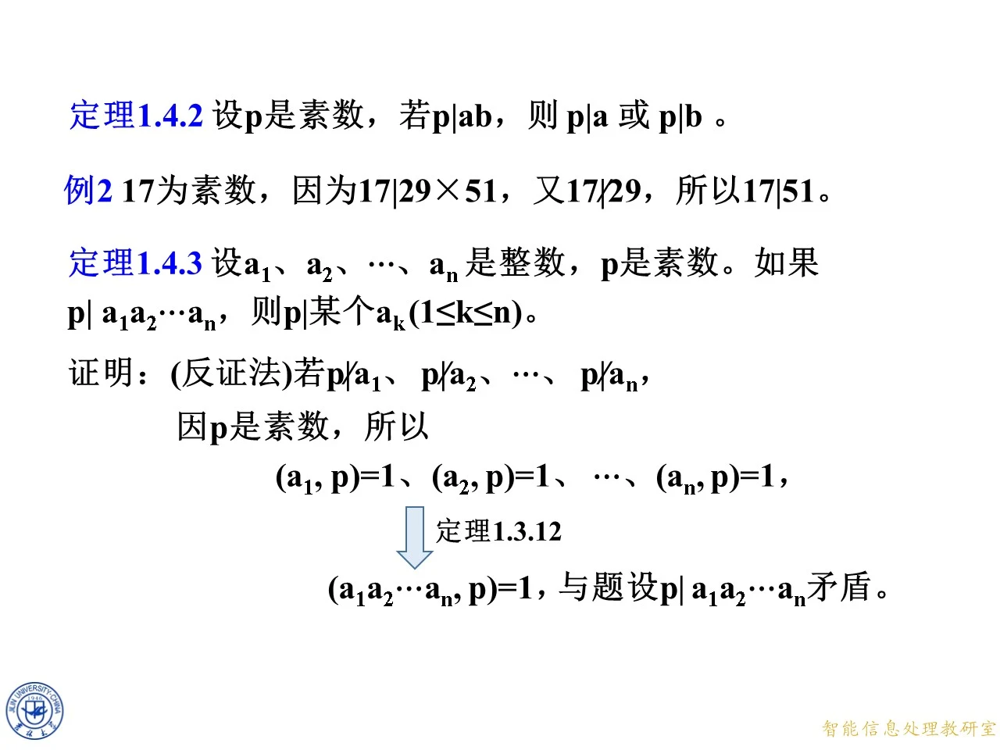

本课属于第一章 1.4 节"整除的进一步性质及最小公倍数"的 1.4.1 小节，核心是两条互相配套的整除定理：互素消去定理（定理 1.4.1，若 c 整除两数之积且 c 与其中一个因子互素，则 c 整除另一个因子）与素数整除积定理（定理 1.4.2，素数整除乘积必整除某一因子）。前者是后者的证明工具，后者又是下一节算术基本定理唯一性证明的基石。本课演示了课件中"思考题逐步板书"的推进方式：命题先作为思考出现，再逐步补全证明，最后升格为编号定理。
1.4.1 整除的进一步性质
◆ p.371 ｜节目录页
本页为 1.4 节的目录页，列出四个小节：1.4.1 整除的进一步性质、1.4.2 最小公倍数、1.4.3 最小公倍数与最大公因数、1.4.4 多个整数的最小公倍数及计算。本课只覆盖 1.4.1 小节，最小公倍数部分在其他课中讲解。
◆ p.372-378 ｜思考：c ∣ a b c\mid ab c ∣ ab ( a , c ) = 1 (a,c)=1 ( a , c ) = 1 c ∣ b c\mid b c ∣ b
p.372 为 1.4.1 小节的节标题过渡页；实质内容从 p.373 开始，是课件用七帧动画逐步展开的思考题。
命题（思考）：设 a a a b b b c c c 正整数 ，如果 c ∣ a b c\mid ab c ∣ ab ( a , c ) = 1 (a,c)=1 ( a , c ) = 1 c ∣ b c\mid b c ∣ b
课件的证明用一张推理链图（逐帧浮现）展示：
第一步：由题设条件 c ∣ a b c\mid ab c ∣ ab c c c a b ab ab c c c c c c c c c a b ab ab c c c
( a b , c ) = c . (ab,c)=c. ( ab , c ) = c .
这一步的理由：c c c a b ab ab c c c c c c a b ab ab c c c c c c c c c
第二步：利用 ( a , c ) = 1 (a,c)=1 ( a , c ) = 1 ( a b , c ) = c (ab,c)=c ( ab , c ) = c a b ab ab c c c a a a
( b , c ) = c . (b,c)=c. ( b , c ) = c .
第三步：由 ( b , c ) = c (b,c)=c ( b , c ) = c c ∣ b c\mid b c ∣ b b b b c c c c c c c c c b b b
整条链就是：c ∣ a b ⇒ ( a b , c ) = c → ( a , c ) = 1 , 定理 1.3.11 ( b , c ) = c ⇒ c ∣ b c\mid ab\Rightarrow(ab,c)=c\xrightarrow{\ (a,c)=1,\ \text{定理 1.3.11}\ }(b,c)=c\Rightarrow c\mid b c ∣ ab ⇒ ( ab , c ) = c ( a , c ) = 1 , 定理 1.3.11 ( b , c ) = c ⇒ c ∣ b
这里用的定理 1.3.11 是上一节"最大公因数的组合性质"类结果（若 ( a , c ) = 1 (a,c)=1 ( a , c ) = 1 c ∣ a b c\mid ab c ∣ ab a a a 正整数 ，所以最大公因数可以不加绝对值直接写 c c c
◆ p.379-380 ｜推理链补全
这两页是上面思考题动画的后两帧：p.379 在链尾补上 ( b , c ) = c (b,c)=c ( b , c ) = c c ∣ b c\mid b c ∣ b
◆ p.381-382 ｜定理 1.4.1（互素消去定理）
动画走完之后，课件把思考题正式升格为定理。
定理 1.4.1：设 a a a b b b c c c c ≠ 0 c\ne 0 c = 0 c ∣ a b c\mid ab c ∣ ab ( a , c ) = 1 (a,c)=1 ( a , c ) = 1 c ∣ b c\mid b c ∣ b
与思考题相比条件放宽了：不再要求正整数，只要求 c ≠ 0 c\ne 0 c = 0 a , b a,b a , b
由 c ∣ a b c\mid ab c ∣ ab ( a b , c ) = ∣ c ∣ (ab,c)=|c| ( ab , c ) = ∣ c ∣ ( a , c ) = 1 (a,c)=1 ( a , c ) = 1 ( b , c ) = ∣ c ∣ (b,c)=|c| ( b , c ) = ∣ c ∣ c ∣ b c\mid b c ∣ b ( a b , c ) = ∣ c ∣ (ab,c)=|c| ( ab , c ) = ∣ c ∣ 需要 c ≠ 0 c\ne 0 c = 0 ——最大公因数对含 0 的对虽有定义（如 ( 0 , c ) = ∣ c ∣ (0,c)=|c| ( 0 , c ) = ∣ c ∣ c c c
课件在页尾用红字补充了一个重要说明：当 c = 0 c=0 c = 0 s a + t c = 1 sa+tc=1 s a + t c = 1 c = 0 c=0 c = 0 ( a , 0 ) = 1 (a,0)=1 ( a , 0 ) = 1 a = ± 1 a=\pm1 a = ± 1 0 ∣ a b 0\mid ab 0 ∣ ab a b = 0 ab=0 ab = 0 0 ∣ b 0\mid b 0 ∣ b s a + t ⋅ 0 = 1 sa+t\cdot 0=1 s a + t ⋅ 0 = 1 s a = 1 sa=1 s a = 1 s = ± 1 s=\pm1 s = ± 1
拓展 （课件外补充）：贝祖路线的完整写法——由 ( a , c ) = 1 (a,c)=1 ( a , c ) = 1 s , t s,t s , t s a + t c = 1 sa+tc=1 s a + t c = 1 b b b s a b + t b c = b sab+tbc=b s ab + t b c = b s a b sab s ab c c c c ∣ a b c\mid ab c ∣ ab t b c tbc t b c c c c b b b c c c c ≠ 0 c\ne 0 c = 0
◆ p.383 ｜例 1
例 1：因为 17 ∣ 5 × 102 17\mid 5\times 102 17 ∣ 5 × 102 ( 17 , 5 ) = 1 (17,5)=1 ( 17 , 5 ) = 1 17 ∣ 102 17\mid 102 17 ∣ 102
验证：5 × 102 = 510 = 30 × 17 5\times 102=510=30\times 17 5 × 102 = 510 = 30 × 17 17 ∣ 510 17\mid 510 17 ∣ 510 ( 17 , 5 ) = 1 (17,5)=1 ( 17 , 5 ) = 1 c = 17 c=17 c = 17 a = 5 a=5 a = 5 b = 102 b=102 b = 102 17 ∣ 102 17\mid 102 17 ∣ 102 102 = 6 × 17 102=6\times 17 102 = 6 × 17 17 17 17 17 17 17

课件原图 · 9月11日授课（2） · 第 383 页 查看前后已收录原页 → 素数整除积（定理 1.4.2 与定理 1.4.3）
◆ p.384 ｜思考升级：素数整除乘积
课件抛出新的思考题：判断以下说法是否正确——设 p p p p ∣ a b p\mid ab p ∣ ab p ∣ a p\mid a p ∣ a
这一帧故意只写"p ∣ a p\mid a p ∣ a p = 6 p=6 p = 6 6 ∣ 2 × 3 6\mid 2\times 3 6 ∣ 2 × 3
◆ p.385-391 ｜思考：设 p p p p ∣ a b p\mid ab p ∣ ab p ∣ a p\mid a p ∣ a p ∣ b p\mid b p ∣ b
p.385、p.386 两帧把命题补全为"则 p ∣ a p\mid a p ∣ a p ∣ b p\mid b p ∣ b
证明分两种情况讨论：
情况一：若 p ∣ a p\mid a p ∣ a p ∣ a p\mid a p ∣ a p ∣ b p\mid b p ∣ b
情况二：若 p ∤ a p\nmid a p ∤ a p ∣ a b p\mid ab p ∣ ab p p p p p p p p p p ∤ a p\nmid a p ∤ a p p p a a a a a a p p p
( p , a ) = 1 ( 由 p 是素数、 p ∤ a ) . (p,a)=1\quad(\text{由 }p\text{ 是素数、}p\nmid a). ( p , a ) = 1 ( 由 p 是素数、 p ∤ a ) .
于是问题化归为定理 1.4.1 的条件：p ∣ a b p\mid ab p ∣ ab ( p , a ) = 1 (p,a)=1 ( p , a ) = 1 c = p c=p c = p
p ∣ b . p\mid b. p ∣ b .
p.390-391 的帧在链上标注定理出处"定理 1.4.1"，p.391 还预告了该思考将被升格为定理。结论亦得证。
两种情况合起来：p ∣ a p\mid a p ∣ a p ∣ b p\mid b p ∣ b
◆ p.392-393 ｜思考题证明收尾
这两帧是上述证明动画的收尾帧：p.392 重复展示完整推理链（p ∣ a b p\mid ab p ∣ ab ( p , a ) = 1 (p,a)=1 ( p , a ) = 1
◆ p.394-397 ｜定理 1.4.2、例 2 与定理 1.4.3
p.394 把思考题正式写成定理。
定理 1.4.2：设 p p p p ∣ a b p\mid ab p ∣ ab p ∣ a p\mid a p ∣ a p ∣ b p\mid b p ∣ b
例 2：17 为素数，因为 17 ∣ 29 × 51 17\mid 29\times 51 17 ∣ 29 × 51 17 ∤ 29 17\nmid 29 17 ∤ 29 17 ∣ 51 17\mid 51 17 ∣ 51
验证：29 × 51 = 1479 = 87 × 17 29\times 51=1479=87\times 17 29 × 51 = 1479 = 87 × 17 17 ∣ 1479 17\mid 1479 17 ∣ 1479 29 ÷ 17 29\div 17 29 ÷ 17 17 ∤ 29 17\nmid 29 17 ∤ 29 51 = 3 × 17 51=3\times 17 51 = 3 × 17 17 ∣ 51 17\mid 51 17 ∣ 51 17 ∤ 29 17\nmid 29 17 ∤ 29
定理 1.4.3：设 a 1 a_1 a 1 a 2 a_2 a 2 … \ldots … a n a_n a n p p p p ∣ a 1 a 2 ⋯ a n p\mid a_1a_2\cdots a_n p ∣ a 1 a 2 ⋯ a n p p p a k a_k a k 1 ≤ k ≤ n 1\le k\le n 1 ≤ k ≤ n
证明（反证法）：假设 p ∤ a 1 p\nmid a_1 p ∤ a 1 p ∤ a 2 p\nmid a_2 p ∤ a 2 … \ldots … p ∤ a n p\nmid a_n p ∤ a n p p p
( a 1 , p ) = 1 , ( a 2 , p ) = 1 , … , ( a n , p ) = 1. (a_1,p)=1,\ (a_2,p)=1,\ \ldots,\ (a_n,p)=1. ( a 1 , p ) = 1 , ( a 2 , p ) = 1 , … , ( a n , p ) = 1.
由定理 1.3.12（两两互素的数与第三个数整体互素的推广：若每个 a i a_i a i p p p a 1 a 2 ⋯ a n a_1a_2\cdots a_n a 1 a 2 ⋯ a n p p p
( a 1 a 2 ⋯ a n , p ) = 1. (a_1a_2\cdots a_n,\ p)=1. ( a 1 a 2 ⋯ a n , p ) = 1.
但题设 p ∣ a 1 a 2 ⋯ a n p\mid a_1a_2\cdots a_n p ∣ a 1 a 2 ⋯ a n p > 1 p>1 p > 1 p p p p p p p p p a k a_k a k
拓展 （课件外补充）：定理 1.4.3 也可不用定理 1.3.12，改用对 n n n n = 1 n=1 n = 1 n ≥ 2 n\ge 2 n ≥ 2 a 1 a 2 ⋯ a n a_1a_2\cdots a_n a 1 a 2 ⋯ a n a 1 a_1 a 1 a 2 ⋯ a n a_2\cdots a_n a 2 ⋯ a n p ∣ a 1 p\mid a_1 p ∣ a 1 p ∣ a 2 ⋯ a n p\mid a_2\cdots a_n p ∣ a 2 ⋯ a n p p p 2 × 3 2\times 3 2 × 3 p ∣ a p\mid a p ∣ a p ∣ b p\mid b p ∣ b p p p 5 ∣ 15 × 20 5\mid 15\times 20 5 ∣ 15 × 20

课件原图 · 9月11日授课（2） · 第 397 页 查看前后已收录原页 →